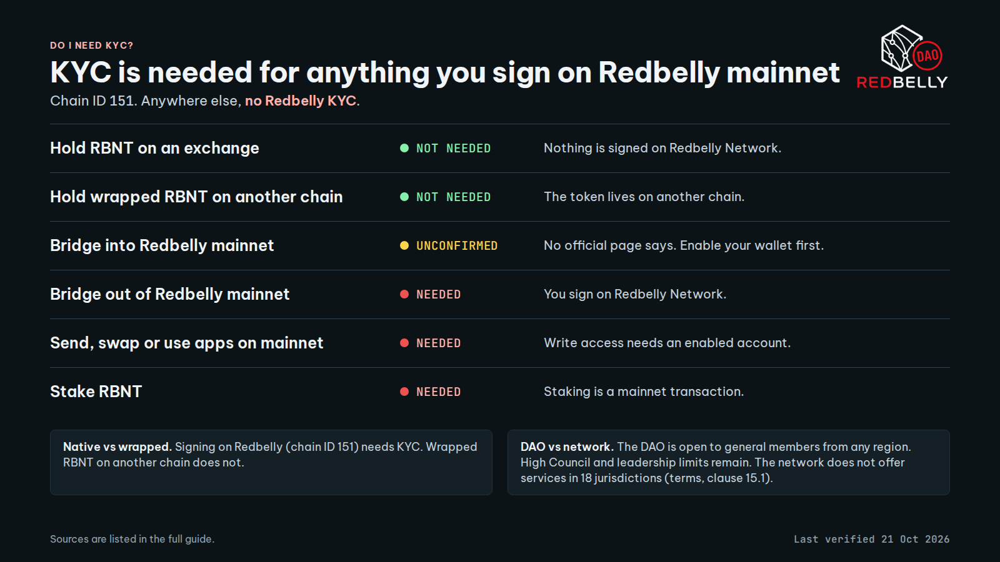

KYC is needed for anything you sign on Redbelly mainnet. It is not needed to hold RBNT on an exchange or wrapped RBNT on another chain.
Last verified 21 Oct 2026| Facts marked Unconfirmed have no official source yet. Check the sources before you rely on anything that can change.
Native is not wrapped
Native mainnet activity means you sign something on Redbelly Network (chain ID 151). That needs KYC.
Wrapped RBNT on another chain is a token on a different chain. That does not need Redbelly KYC.
DAO is not network
The DAO removed its geographic restrictions for general DAO members. General DAO members can join from any region. Geographic limits remain for High Council members and DAO leadership S11.
The network still does not offer services in 18 jurisdictions listed in clause 15.1 of its terms. That is unchanged.
Part A
Do I need KYC?
Rule: if you sign it on Redbelly mainnet, you need KYC. If it happens anywhere else, you do not.
Pick what you want to do
Your answer shows here. The full table is below.
Do I need KYC for each situation
What you do
KYC?
Why
Hold or buy RBNT on an exchange
NOT NEEDED
Nothing is signed on Redbelly Network. Any ID check the exchange asks for is the exchange's own and separate. S1S6Derived
Hold wrapped RBNT (WRBNT) on another chain
NOT NEEDED
The token lives on another chain. Redbelly access applies to your account on Redbelly Network. S1S7Derived
Bridge into Redbelly mainnet
UNCONFIRMED
No official page says if a wallet must be enabled before it can receive bridged tokens. Enable the wallet first to be safe. S7
Bridge out of Redbelly mainnet
NEEDED
You sign a transaction on Redbelly Network, and that needs write access. S1S7Derived
Send, swap or use apps on mainnet
NEEDED
Users must claim an access credential, then enable their account with write access. S1S2
Stake RBNT
NEEDED
Staking is a deposit call on a mainnet contract, which is a transaction. S5S1Derived
Derived means no official page states the answer in those words. It follows from the official statements linked next to it. The linked sources show the chain, so you can check it.
WRBNT also exists on Redbelly Network itself S7. Using it there is a mainnet action and needs KYC. Where the token sits decides the answer.

The same guide as an image for sharing. Download PNG
Part B
The five common questions
1. When do I need KYC, and when do I not?
You need KYC to use Redbelly mainnet. You do not need it to hold RBNT on an exchange or wrapped RBNT on another chain.
Every participant must prove who they are before getting access, and a user must hold an access credential from an accredited issuer before enabling write access on their account S1S2. The onboarding toolkit describes this as wallet authentication, KYC verification and on chain permission setup S9. Part A shows each case.
2. How many wallets can one verified identity cover? What happens after that?
One verified identity covers 10 wallets.
Redbelly Access shows the message "Account allocation exhausted." once 10 accounts are linked to your identity S10. The number comes from the portal itself. After 10, no source listed here describes a way to add more, so ask Averer in a ticket (Part D).
3. How long does approval take?
Usually a few minutes. In rare cases, a few days.
Redbelly Access says this while your identity is pending: it can take "a few minutes but in some (rare) cases it could take a few days" S10. Press Check verification status to refresh. If it still says Identity verification pending after a few days, open a ticket with Averer (Part D).
4. Can I join from my country?
The DAO: yes, from any region as a general member. The network: no, if you are a tax resident of or located in one of 18 listed jurisdictions.
DAO. A DAO vote removed the geographic restrictions for general DAO members. The proposal passed and voting closed on 5 July 2026 S11. General DAO members can now join from any region. The proposal kept all existing geographic limits for High Council members and General DAO Leadership. This vote changed the DAO only. It did not change the network's terms.
Network. Redbelly says it does not offer services in the jurisdictions in clause 15.1 and that tax residents of or people located in them may not use its website, platform or tools (clause 15.2). You also confirm you are not in a US embargoed or "terrorist supporting" country and not on a US restricted party list (clause 15.3) S4.
The 18 jurisdictions in clause 15.1
Afghanistan
Central African Republic
Democratic People's Republic of Korea
Democratic Republic of the Congo
Guinea-Bissau (spelled "Guinea-Bussau" in the terms)
Iran
Iraq
Lebanon
Libya
Myanmar
Russia
Somalia
South Sudan
Sudan
Syria
Ukraine
Yemen
Zimbabwe
5. Do I need KYC to stake, and why?
Yes. Staking is a transaction on Redbelly mainnet, and only enabled accounts can send one.
You stake by calling deposit on the StakingEscrowUpgradable contract on mainnet. A node must stake 100,000 RBNT S5. Write access needs an access credential and an enabled account S1. The staking page does not use the word KYC, so this answer is Derived from those two statements.
Part C
Get verified and activate a wallet
Connect your wallet on Redbelly Access, verify your passport with an accredited issuer, then enable your account.
Before you start
MetaMask or Coinbase Wallet. Redbelly Access names these two wallets S10.
You are not a tax resident of or located in a clause 15.1 jurisdiction S4.
Nothing to pay. The portal says the accredited issuer covers the fees needed to grant your network access S10.
The address of the one wallet you want to activate. Never share your seed phrase or private key with anyone, ever.
Button names below are written the way they appear in Redbelly Access. See the evidence page for where each one was read.
Steps
Open the portal and connect your wallet
Type access.redbelly.network into your browser yourself. Do not use links from messages or ads. Press Connect wallet and approve the connection in your wallet S10.
If the wallet will not connect, add the network by hand
The portal has an ADD NETWORK MANUALLY link S10. You can also enter these values in your wallet S8.
Network name
Redbelly Network Mainnet
RPC URL
https://governors.mainnet.redbelly.network
Chain ID
151
Currency symbol
RBNT
Block explorer
https://redbelly.routescan.io/
Begin identity verification
Press Begin identity verification. The portal explains that Averer, an accredited issuer on Redbelly Network, manages the check S10.
Read the notice and continue to Averer
The portal says you must give Averer documents such as a passport, and that this data is not shared with or stored on Redbelly Network. Tick I understand, then press Continue with Averer. The button stays off until you tick the box S10.
Complete the check with Averer
A window titled "Interacting with averer.co" opens. Follow its prompts to submit your passport and finish the biometric check. The issuer verifies the documents you submit S1S3S15S10.
Wait for approval
The screen shows Identity verification pending. This usually takes a few minutes and rarely a few days. Press Check verification status to refresh S10. If it says incomplete or failed, go to Part D.
Enable your account
Once you are approved, your account shows Account status: Not enabled, with an Enable account button. Press it and approve the prompt in your wallet S1S10.
You do not pay for this. The portal says the issuer covers the fees and provides the funds your account needs to enable it S10. If the portal says you have not received the RBNT yet, wait a few minutes and try again.
Check that it worked
Your account shows Account status: Enabled S10. Your wallet can now send transactions on Redbelly mainnet, which includes bridging out and staking S1.
Add another wallet to the same verified identity
Open the portal with a wallet that is already enabled. Press Add another account or Link another wallet.
Both buttons sit in the portal's accounts area and link the new wallet to your existing verified identity S10. A warning says that by linking another wallet you are accountable for everything that wallet does on the network. Press I understand to continue. Each account shows its own Account status. If the new one says Not enabled, press Enable account as in step 7. The limit is 10 accounts per identity. If it fails, see "The wallet limit is reached" in Part D.
Part D
When something goes wrong
Approval is taking too long
Wait a few days, then open an Averer ticket.
Redbelly Access says a pending check usually takes a few minutes and rarely a few days, and asks you to check again soon S10. Press Check verification status to refresh. If the screen still says Identity verification pending after a few days, open a ticket.
My verification was rejected or marked incomplete
Incomplete means resubmit. Failed means contact Averer.
If the screen says Identity verification incomplete, the portal says Averer cannot yet verify you and you may need to resubmit some information. Press Retry identity verification. If it keeps happening, contact Averer. If the screen says Identity verification failed, the portal says Averer could not verify your identity and you should reach out to Averer directly. Use the CONTACT AVERER link, or open a ticket below S10. Quote the exact words on your screen.
The wallet limit is reached
At 10 linked accounts the portal shows "Account allocation exhausted." Use one of your 10 wallets, or ask Averer.
No source listed here describes raising the limit, so ask in an Averer ticket S10. If you try to add an address that belongs to another account, the portal says it is attached to another account. It can also say the address is already linked to a different identity. Try a different address.
The network will not connect, or enabling fails
Add the network by hand with the values in Part C step 2, then ask for help.
If the portal says you have not received the RBNT yet, wait a few minutes and try again S10. The portal's own help box sends identity problems to Averer, and says Redbelly Support may be able to help with connection or account errors S10. Redbelly's support page points to its Discord community S14. Never send RBNT or share keys with anyone who offers to help in a message.
Fill in the form. These fields are marked mandatory: Full Name, Email Address, Subject, "What is your issue?" and Redbelly Wallet Address S13.
Use a clear subject, for example "Approval pending for a few days". In the issue box, give the exact words on your screen and the date you submitted. In the wallet address field, put the address you used on Redbelly Access.
Add files with Attach files if they help. Never attach or write a seed phrase or private key. The form only asks for a wallet address.
Complete the reCAPTCHA, press Submit, then watch the email you used for the reply.
Sources
Every fact, with its link
All pages below were checked on 21 October 2026. Where a page did not say something, the guide says so. Portal wording was read from the portal's own files, listed with names and checksums on the evidence page.
S2 Identity and participation (all participants must prove identity before access; users need a credential before enabling write access). vine.redbelly.network/identity/
S7 Bridged tokens (Lucid Labs bridge, WRBNT on Redbelly, Ethereum and Base, chain ID 151). The page does not mention KYC or account enablement. vine.redbelly.network/bridged-tokens/lucidlabs/
S10 Redbelly Access portal. Wording read from its own script files on 21 October 2026: the wallets and fees FAQ, the pending, incomplete and failed messages, the 10 account message, and every button name used in Part C and D. access.redbelly.network. File names and checksums: evidence page.
S11 DAO vote on Snapshot, "DAO Proposal: Increase Governance Accessibility and Protect Contributor Privacy" (proposal title: Remove Voting Whitelist Requirement and Remove Geographic Restrictions for General DAO Members). Passed, voting ended 5 July 2026. snapshot.box proposal 0xa57c...4e02
S13 Averer ticket page. Form fields read on 21 October 2026: Full Name, Email Address, Subject, What is your issue?, Redbelly Wallet Address, Attach files, reCAPTCHA. averer-help.freshdesk.com/support/tickets/new
Whether a wallet must be enabled before it can receive bridged tokens. No source says. Part A marks it Unconfirmed.
What happens after 10 accounts beyond the portal message, and any way to raise the limit.
The difference between Add another account and Link another wallet. The portal text read here does not explain it.
Portal wording can change when Redbelly updates the portal. The checked date is above.
Short version for Discord and Telegram
KYC on Redbelly in 10 seconds
NEEDED: send, swap or use apps on mainnet. Bridge out of mainnet. Stake.
NOT NEEDED: RBNT on an exchange. Wrapped RBNT on another chain.
UNCONFIRMED: bridging into mainnet. No official page says. Enable your wallet first.
Wallets: 10 per verified identity. At 10 the portal shows "Account allocation exhausted."
Approval: usually a few minutes, rarely a few days (Redbelly Access says so).
DAO: open to every region for general members (vote passed 5 July 2026). Network: not offered in the 18 jurisdictions in clause 15.1 of the terms. These are separate rules.
Get verified: access.redbelly.network
Stuck or rejected: https://averer-help.freshdesk.com/support/tickets/new
Never share a seed phrase.
Full guide and sources: https://wallet-activation.vercel.app/
Last verified 21 Oct 2026. Re-check the sources before relying on it.